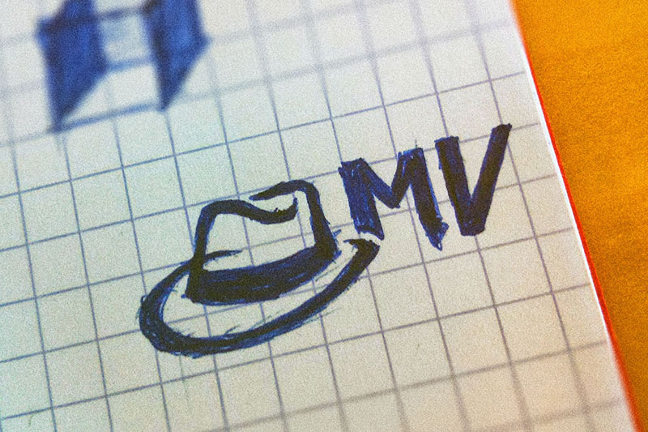

Matthieu Van Mechelen is a belgian musician, passionate about sound creation & composition. I was asked to create a logo for his work (mostly great electronic music). He wanted something that would give a strong impression, and loved the idea of a hat (as in : couldn’t live without ;) ).

So I started scouting around for some interesting hat forms, drawing a lot of them, to finish on some mafia hat, for its strong & groovy feeling, playing well with Matthieu’s music. I worked with the League Gothic font, cropped by the hat, adjusting some anchor points of the letters to have a more “squared” feeling.
This font allows has a great readability, thus allowing the logo to still be identifiable even in the smallest sizes. Its weight gives also a strong and firm impression.
Variants of the logo were developed both in vertical and in horizontal, allowing a lot of usages. I also worked on a single hat icon for use in the social medias (like on his twitter ).
Vous êtes intéressés par mes services ? N'hésitez pas à prendre contact, je reviendrai vers vous au plus vite pour discuter ensemble de votre projet !